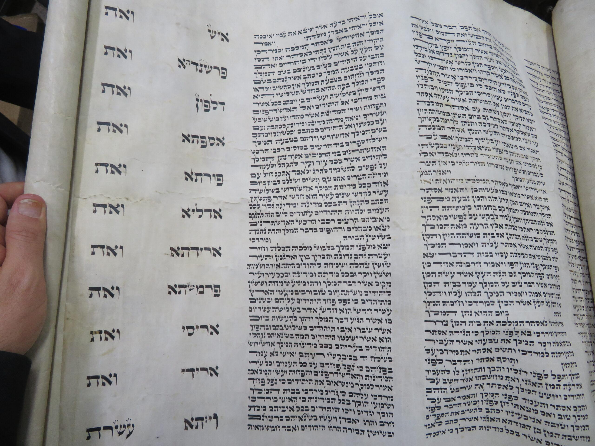

אני רוצה לכתוב סת"ם
לפני שנירד לפרטים, נקדים מעט על מוצרי הסת"ם הנכתבים:
כתיבת ספר תורה:
מעלת הכתיבה של ספר תורה שאפשר לכתוב רצוף ללא הפסקה, כיון שאין בעיה של 'כסדרן',
ובסוף הספר לאחר מספר חודשי כתיבה לעסוק בתיקונים תגים והגהות.
בנוסף הכתיבה של ספר תורה מרעננת כיון שאנו כותבים טקסט חדש,
ולא את אותו הטקסט הקבוע כסופר שכותב מזוזות, ואין לו את ההתחדשות הזו.
בנוסף בכתיבת ספר תורה אפשר לכתוב בכתב גדול, למי שהכתב הקטן דוגמת המזוזות והתפילין מאמץ אותו.
מצד שני החסרון שבכתיבת ספר תורה, הוא אורך הזמן שהכתיבה אורכת,
סופר סת"ם הכותב עמוד בספר תורה [שלוקח כארבע שעות] מדי יום, יסיים את הספר בזמן משוער של שנה.
סופר הכותב חצי עמוד מדי יום [כשעתיים] יסיים בשנתיים.
אך מי שאינו מתמיד לכתוב כל יום מספר שעות לא יוכל לעמוד באספקה של ספר תורה ללקוח.
עלויות הסופר: בערך 30 אלף ש"ח, הכולל: קלף, דיו, תיקונים, תיוג, הגהה, ותפירה.
וממילא אם הספר נמכר ב90,000 ש"ח, נשאר לסופר 60,000 ש"ח עבור הכתיבה,
אך כל זה שהסופר מוכר ישירות ללקוח, אולם לעבוד מול הקונה דורש הרבה סבלנות, ומלווה בהמון כאב ראש,
לכן רוב הסופרים מעדיפים לעבוד מול סוחר, להרויח פחות! לא להכיר את הרוכש, ולהיות בראש שקט.
כתיבת מזוזות:
לעומת זאת סופר סת"ם הכותב מזוזות יכול לכתוב כשעה ביום, הוא פחות לחוץ על ידי הלקוח,
כתיבת ספר תורה מקביל לכתיבת כ496 מזוזות!!!
עלויות הסופר: 50 ש"ח בערך, הכולל: קלף, תיוג, והגהה.
מזוזה נמכרת בין 120 ש"ח ל300 ש"ח בכתב ספרדי, בכתב אשכנזי עוד קצת.
ואם נדייק נאמר שיש בזה המון משתנים: האם הכתב הלכתי?, יופי הכתב, תעודה, יראת שמיים של הסופר, ועוד.
לכן קשה לתקוע מסמרות ולומר זה המחיר, אך כתבנו את העיקרון.
גם במזוזה, רוב הסופרים עובדים עם סוחר, כי העיסוק בלמצוא לקוחות ולעבוד מולם,
מקשה על תפוקת העבודה ואיכותה, ולכן נח לעבוד מול סוחר, גם אם נרויח פחות.
כתיבת תפילין:
ראשית הכתיבה של התפילין מתן שכרה בצידה, בפרט ברמות הגבוהות,
כתיבת תפילין שקולה כ5 מזוזות בערך, אך אפשר להרויח בה הרבה יותר,
כיון שהרבה נותנים לזה חשיבות יותר מכל דבר אחר,
שהרי כל יהודי יודע שתפילין מהודרות ישפיעו על חיי הילד הצלחתו ועלייתו ביראת שמיים,
לכן אם יש סופר המוחזק ירא שמיים והכתב שלו יפה בפרשיות התפילין,
יהיו מוכנים הלקוחות לשלם אפילו פי שניים במחיר.
עלויות הסופר: 250 ש"ח בערך, הכולל: קלף הגהה ותיוג.
פרשיות התפילין נמכרות בטווח של 800 ש"ח, ל3500 ש"ח בכתב ספרדי, ובכתב אשכנזי מעט יותר.
גם פה נדייק נאמר שיש בזה המון משתנים: האם הכתב הלכתי?, יופי הכתב, תעודה, יראת שמיים של הסופר, ועוד.
לכן קשה לתקוע מסמרות ולומר זה המחיר, אך כתבנו את העיקרון.
כיון שהמון אנשים רוצים להזמין תפילין לילדם מסופר שהם מכירים בעצמם.
כתיבת מגילת אסתר:
היתרון בכתיבת מגילה הוא כספר תורה שאין בעיה של 'כסדרן',
ויתר על כן אין בה שמות קודש, ולכן תלמידים שהתחילו זה עתה בכתיבת סת"ם,
יכתבו מגילה בשלב ראשון.
מצד שני החסרון הגדול בכתיבת מגילת אסתר הוא: שהמכירות שלה הוא בעיקר לפני פורים,
למעט סופר שקיבל הזמנה אישית למגילה מאת הלקוח בעצמו.
וההשלכות הם שאין שוק כל השנה, וסוחר שקונה בכל שזאת בשאר השנה,
רוכש את המגילה להשקעה! ולכן הוא רוצה את המגילה המחיר נמוך,
סופר שחיכה עד פורים עם המגילה שלו, ימצא את עצמו לפני החג מוכן למכור בכל מחיר,
כי אם לא יתפשר המגילה תשאר אצלו.
ובנוסף התלמידים מורידים את מחיר הסחר במגילות,
כי הם פשוט רוצים למכור בכדי להתחיל לעבוד, ופעמים שהמגילה נמכרת לסוחר במחיר הפסד לסופר.
עליות הסופר: 1400 ש"ח בערך, הכולל: קלף, דיו, תיוג, הגהה, ותפירה.
נמכר בין 2500 ש"ח ל7000 ש"ח, בכתב ספרדי, בכתב אשכנזי מעט יותר.
